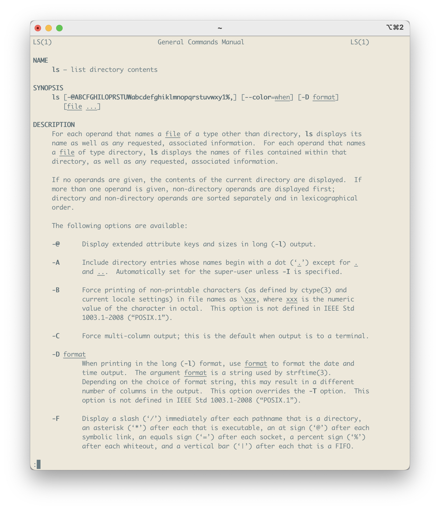
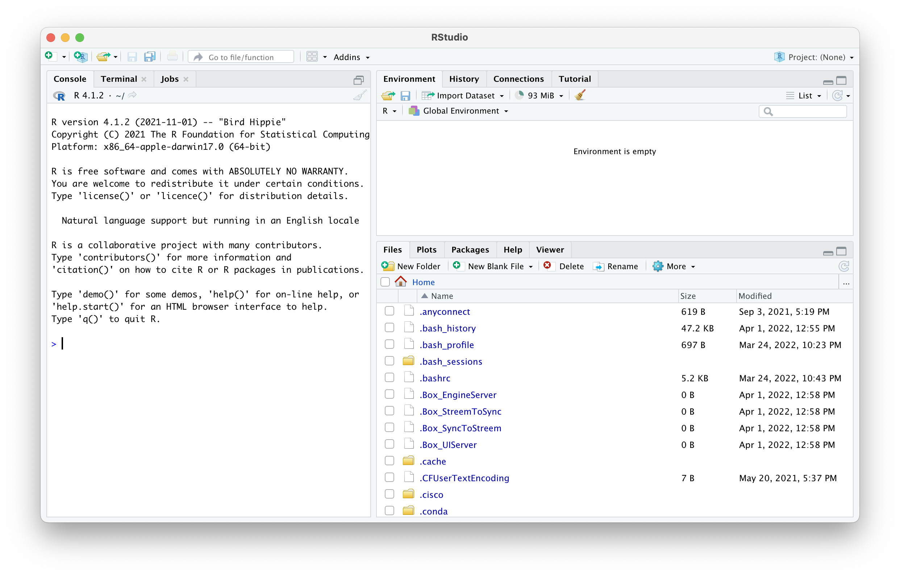
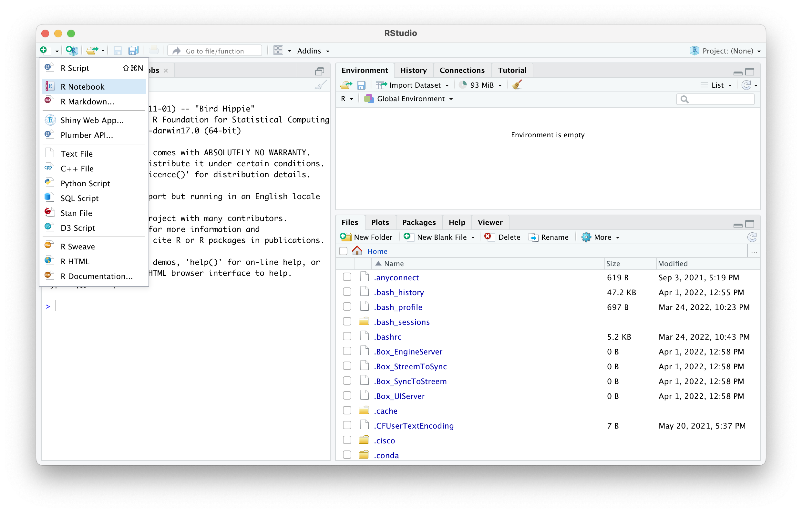
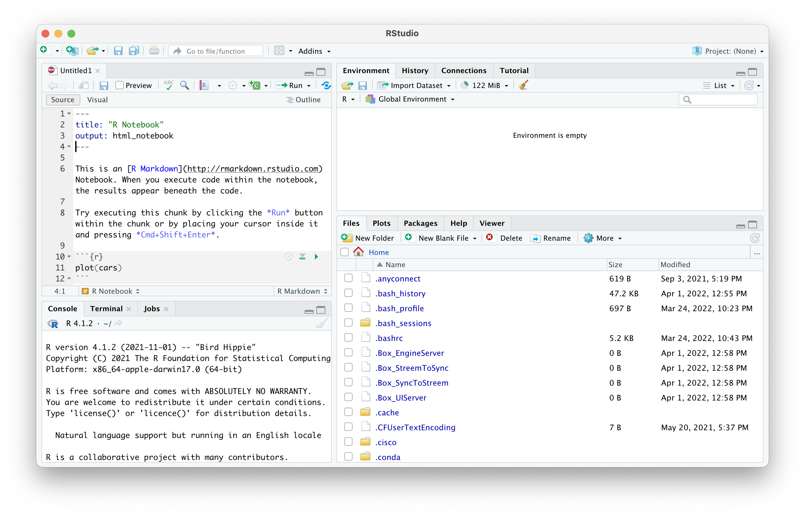

5 Getting started - Standalone

- Two, switch to macOS in combination with homebrew (this is also known as
brew). This will give you all the flexibility to use Unix-based programs for your genetic epidemiology work and at the same time you’ll keep the advantage of a powerful computer with a user-friendly interface.
I chose the latter.
So, you plan to use this book as ‘Standalone’ on a macOS environment. This means you’ll need to install a few things first.
5.1 The data you need
You’ll need to start by downloading the data you need for this practical to your Desktop.
Here’s the link to the data.
Link to Google Drive with data
Make sure you put the data in the ~/Desktop/practical/ folder.
The data are pretty large (approx. 15Gb), so this will take a minute or two depending on your internet connection. Time to stretch your legs or grab a coffee (data scientists don’t drink tea).
Note: the WTCCC1 data are not available for public download, as you need permission to use them. However, we do provide the instructions under the assumption your WTCCC1 data will be on genome build 37 and imputed against 1000G phase 3.
5.2 Terminal
For all the programs we use, except RStudio, you will need the Terminal. This comes with every major operating system; on Windows it is called ‘PowerShell’, but let’s not go there. And regardless, you will (have to start to) make your own scripts. The benefit of using scripts is that each step in your workflow is clearly stipulated and annotated, and it allows for greater reproducibility, easier troubleshooting, and scaling up to high-performance computer clusters.
Open the Terminal, it should be on the left in the toolbar as a little black computer-monitor-like icon. Mac users can type command + space and type terminal, a Terminal screen should open.
From now on we will use little code blocks like the example to indicate a code you should type/copy-paste and hit enter. The label above each block tells you where: Terminal for the Terminal, R for
R/RStudio, and Output for what you should see (do not type that). If a code is followed by a comment, it is indicated by a # - you don’t need to copy-paste and execute this.
Terminal
CODE BLOCK
CODE BLOCK # some comment here5.4 Installing the software
5.4.1 brew
Linux has a great package-manager that is lacking on macOS. You can install brew to compensate for this. This adds the ability to install almost any Linux-based program through the Terminal such as wget, llvm, etc.
Open Terminal and execute the following:
Terminal
/bin/bash -c "$(curl -fsSL https://raw.githubusercontent.com/Homebrew/install/HEAD/install.sh)"Check if everything is in order.
Terminal
brew doctorIt shouldn’t report any errors.
5.4.2 PLINK
First, we’ll get PLINK. Navigate to the PLINK v1.9 website, which can be found here. Download the macOS (64-bit) version under ‘Stable (beta x.x, day month year)’.
Note: Apple produced Intel-based computers for a few years back, and most programs, packages, libraries and whatnot are designed for that. So, I highly recommend using software designed for that and activating Rosetta2 in your Terminal. Don’t know how to do that? Following these instructions.
Unzip the folder and put plink in the practical folder.
Terminal
mv -v ~/Downloads/plink_mac_20231211/plink ~/Desktop/practical/plink 5.4.3 Installing R and RStudio
Let’s go ahead and use brew to install the R and RStudio software.
In Terminal execute the following and just follow the instructions.
Terminal
brew install rstudio
brew install --cask rNow close the terminal window - really make sure that the terminal-program has quit.
Open your fresh installation of RStudio by double clicking the icon. You should be seeing something like Figure 5.2

In the top right, you see a little green-white plus-sign, click this and select ‘R Notebook’ (Figure 5.3).

You will create an untitled (Untitled1) R notebook: you can combine text descriptions, like you would in a lab-journal, with code-sections. Read what is in the notebook to get a grasp on that (Figure 5.4).

Right, you should be installing some packages. To do so, you can remove plot(cars) (or leave and create a new code-block as per instructions in the notebook), and copy paste the code below. Make sure to put in a code block like the example in which plot(cars) is in.
R
remotes::install_github(c("rstudio/rmarkdown"))
install.packages(c("formatR", "remotes",
"httr", "usethis",
"data.table", "devtools",
"dplyr", "tibble", "tidyverse",
"openxlsx",
"ggplot2",
"ggsci", "ggthemes",
"qqman", "CMplot", "plotly",
"openxlsx"))
devtools::install_github("kassambara/ggpubr")
devtools::install_github("oliviasabik/RACER")
remotes::install_github("MRCIEU/TwoSampleMR")
devtools::install_github("MRCIEU/MRInstruments")
if (!require("BiocManager", quietly = TRUE))
install.packages("BiocManager")
BiocManager::install("geneplotter")You should load these packages too.
R
library(rmarkdown)
library(formatR)
library(openxlsx)
library(data.table)
library(tibble)
library(tidyverse)
library(dplyr)
library(plotly)
library(ggplot2)
library(devtools)
library(ggpubr)
library(ggsci)
library(ggthemes)
library(qqman)
library(CMplot)
library(RACER)
library(remotes)
library(TwoSampleMR)
library(MRInstruments)
library("geneplotter")All in all this may take some time, good moment to relax, review your notes, stretch your legs, or take a coffee.
5.5 Your OpenGWAS token
Later in this primer, in Chapter 18, you will use TwoSampleMR to perform a Mendelian randomisation. This package retrieves data from the IEU OpenGWAS database, which requires a free personal token: a long string of characters that works like a password. Getting one takes a few minutes, so let’s do that now.
- Log in at https://api.opengwas.io/profile/, for example with your GitHub, Google or Microsoft account.
- Click to generate a new token and copy it.
- Open your
.Renvironfile fromR. This file stores settings thatRreads every time it starts.
- Add a line with
OPENGWAS_JWT=followed directly by your token. If the file already contains other lines, keep them. It should look something like this:
.Renviron
R_LIBS_USER=~/Library/R/%v/library
OPENGWAS_JWT=eyJhbGciOiJSUzI1NiIsImtpZCI6...the-rest-of-your-token...
ImportantGetting
.Renviron right
- Put the token directly after the
=: no spaces, no quotes. - The token is one long line; make sure it is not split over several lines.
- End the file with an empty line (press Enter after the token), otherwise
Rmay skip the last line. - Save the file and restart
R(in RStudio: Session > Restart R).Ronly reads.Renvironwhen it starts.
- Check that it works:
WarningYour token is personal
Treat your token like a password. Never put it in a notebook, script or report that you hand in or share, and never paste it in a chat or forum. .Renviron is the right place for it, because it stays in your own home directory. If you think someone else has seen your token, generate a new one on the OpenGWAS website; the old one then stops working.
5.6 Your LDlink token
For the regional association plots later in this book we use LDlink to look up the linkage disequilibrium (LD) between variants. LDlink also needs a free personal token.
- Request a token at https://ldlink.nih.gov/apiaccess with your name, e-mail address and institution. The token is sent to you by e-mail.
- Add it to the same
.Renvironfile, on its own line:
.Renviron
R_LIBS_USER=~/Library/R/%v/library
OPENGWAS_JWT=eyJhbGciOiJSUzI1NiIsImtpZCI6...the-rest-of-your-token...
LDLINK_TOKEN=abcdef123456- Save, restart
R, and check:
The same rules apply as for your OpenGWAS token: one line, no spaces or quotes, keep it to yourself.
5.7 Are you ready?
Are you ready? Did you bring coffee and a good dose of energy? Let’s start!
Oh, one more thing: you can save your notebook, the one you just created, to keep all the R codes you are applying in the next chapters and add descriptions and notes. If you save this notebook you’ll notice that a html-file is created. This file is a legible webbrowser-friendly version of your work and contains the codes and the output (code messages, tables, and figures). And the nice thing is, that you can easily share it with others over email.
Ok. ’Nough said, let’s move on to cover some basics in Chapter 6.